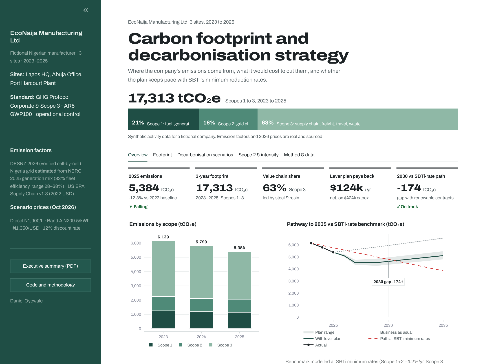
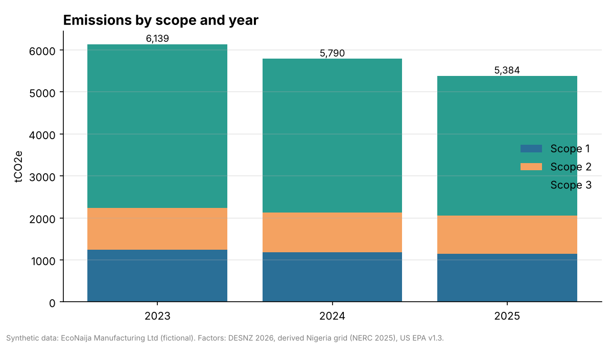
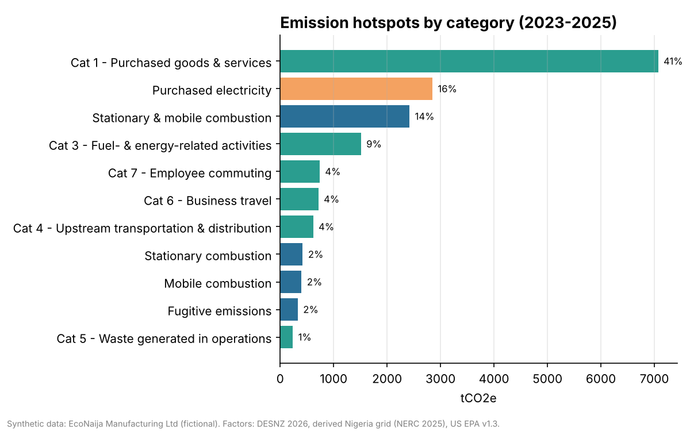
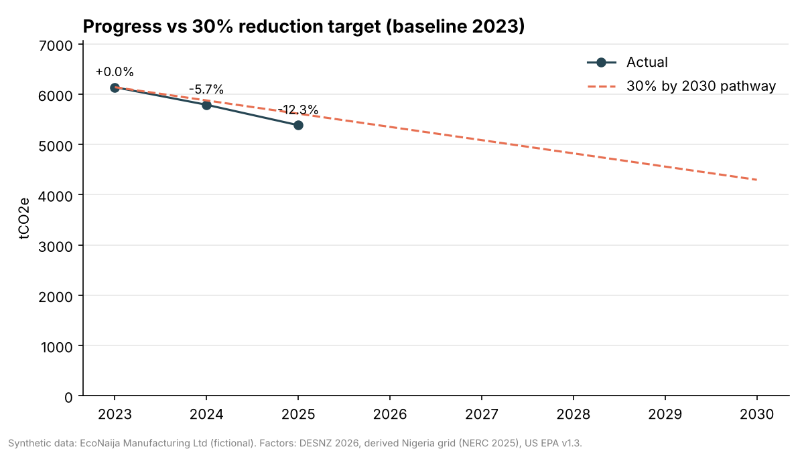
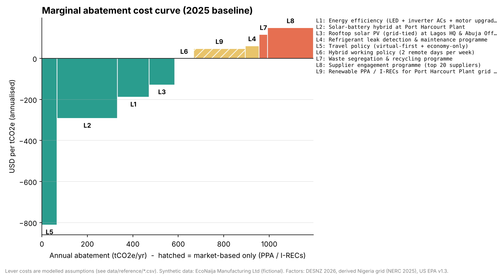
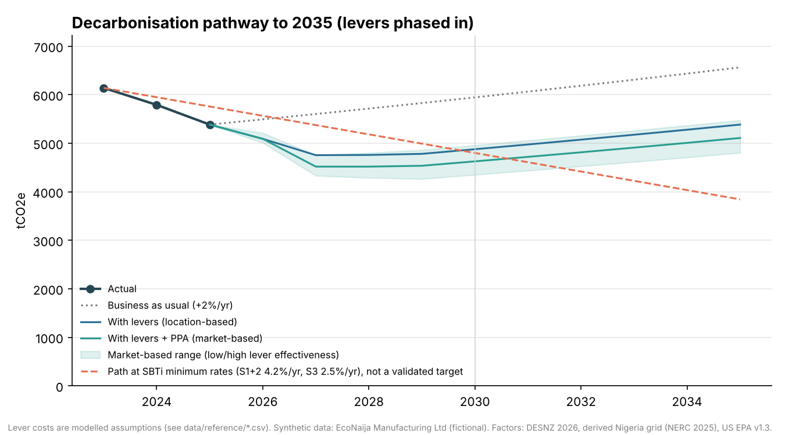
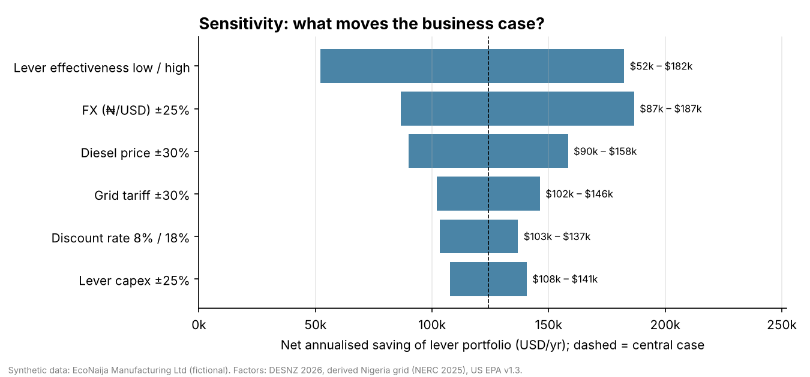

An end-to-end Scope 1, 2 and 3 emissions inventory built on the GHG Protocol, with real DESNZ 2026, EPA and Nigeria grid factors, a costed decarbonisation plan and an interactive ESG dashboard.
Demo data: activity data is synthetic (fictional EcoNaija Manufacturing Ltd, 3 sites, 2023–2025). Emission factors and costs are real and sourced.
| Footprint 2023–25 | 17,313 tCO₂e | 5,384 t in 2025 |
| Scope 3 share | 63% | Scope 1: 21%, Scope 2: 16% |
| Change vs 2023 | −12.3% | ahead of the −30% by 2030 path |
| Abatement found | ~968 t/yr | −18% with 8 physical levers |
| Net saving | ~$124k/yr | on $424k capex |
Steel (18%) and plastic resin (12%) lead, so supplier data on these two materials is the top data-strategy priority.
A scope-correct grid factor of 0.417 kgCO₂e/kWh, derived from NERC 2025 generation data, makes on-site solar especially valuable.
Eight physical levers cut ~968 tCO₂e/yr and save ~$124k/yr net. The Port Harcourt solar-battery hybrid pays back in ~2 years.
On a location basis the pathway misses by ~77 t, so a second wave of levers is needed by ~2029.

Emissions by scope, site and year, progress against the target, and the costed abatement plan.





